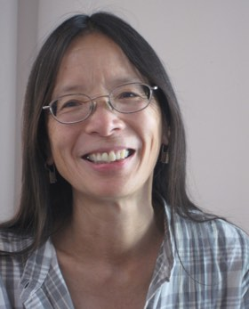

2016 Founders celebration honorees
-
Alumni Achievement Award and Keynote Presentation
For outstanding personal achievement in radio broadcasting, storytelling, and podcasting, and lasting contributions to her field.
Julie Snyder
 Julie Snyder (Kresge '95, politics) has been the guiding force behind two of the most successful ventures in audio broadcasting: She is the co-creator of the podcast Serial, which debuted in October 2014 and has been downloaded more than 200 million times, making it the most listened-to podcast in the history of the form; and for many years, she was the senior producer of the public radio show This American Life, which is heard by more than 4 million listeners each week.
Julie Snyder (Kresge '95, politics) has been the guiding force behind two of the most successful ventures in audio broadcasting: She is the co-creator of the podcast Serial, which debuted in October 2014 and has been downloaded more than 200 million times, making it the most listened-to podcast in the history of the form; and for many years, she was the senior producer of the public radio show This American Life, which is heard by more than 4 million listeners each week.Snyder began working at This American Life in 1997—almost from its inception—and, along with host Ira Glass, has set the editorial agenda for the program, winning four Peabody Awards along the way. She has produced many of This American Life's most entertaining and memorable episodes, including "24 Hours at the Golden Apple," and "Notes on Camp." In addition, she has also headed the program's most ambitious and topical programs, notably episodes covering the wars in Iraq and Afghanistan, health care reform, and urban violence in Chicago.
In 2013, Snyder began talking with her This American Life colleague Sarah Koenig about trying something new: making a show that doesn't follow the usual format of a different story every week, but instead covering one story over the course of an entire season. After a year of reporting, with Koenig as host/reporter and Snyder as editor, the first season launched and Serial became a sensation.
Serial's second season broadcast in early 2016 and set new download records. Serial has won several awards for broadcast journalism, including the 2014 Peabody Award, marking the first time the award has been given to a podcast.
-
Fiat Lux Award
For exceptional commitment, deep understanding, and outstanding generosity to UC Santa Cruz.
The Helen and Will Webster Foundation
 The philanthropy of the Helen and Will Webster Foundation is making an exceptional impact on the UC Santa Cruz campus. Most recently, the foundation endowed and named Rachel Carson College (formerly College Eight), honoring the late writer and pioneering conservationist for her courage and pivotal role in awakening the public to environmental issues. The foundation has supported multiple other initiatives across campus, including environmental programs, the Center for Agroecology and Sustainable Food Systems, the Libraries, the Natural Reserves, and the Quarry Amphitheater.
The philanthropy of the Helen and Will Webster Foundation is making an exceptional impact on the UC Santa Cruz campus. Most recently, the foundation endowed and named Rachel Carson College (formerly College Eight), honoring the late writer and pioneering conservationist for her courage and pivotal role in awakening the public to environmental issues. The foundation has supported multiple other initiatives across campus, including environmental programs, the Center for Agroecology and Sustainable Food Systems, the Libraries, the Natural Reserves, and the Quarry Amphitheater.Alec Webster and his wife, Claudia, help steward the Helen and Will Webster Foundation, which was established by Alec’s parents in 1997.
Alec came to UC Santa Cruz in 1987 as a precision machinist and technician for the Santa Cruz Institute for Particle Physics. From there, he decided to pursue his interest in the environment, food production, forestry, and social justice issues, and earned a degree in environmental studies from UC Santa Cruz (Rachel Carson College '02).
Separately, Claudia was putting her University of California degree (UC Santa Barbara '75) to work as an art teacher. Together, they actively support environmental and education programs.
Alec served on the South Campus Vision Council, which ignited his passion for the campus historic district and led to the Helen and Will Webster Foundation providing a gift for renovation and programming for the historic Cowell Ranch Hay Barn. The rebuilt barn provides a new landmark at the main campus entrance.
Currently, Alec is a UC Santa Cruz Foundation trustee, and will serve as its next chair. Claudia recently became a trustee of the UC Santa Barbara Foundation.
-
Faculty Research Award
For influential research and field work in linguistics, leading to increased understanding of languages and communication.
Sandra Chung
Sandra Chung's research in syntax combines theoretical rigor with an unusually deep empirical analysis. She has spent her academic life trying to reconcile the demands of a mentalist linguistic theory with the apparent diversity exhibited by the world's languages.
Her empirical focus is the Austronesian languages —some 1,200 related languages spoken on Pacific island archipelagos—and especially Chamorro, an understudied language of the Mariana Islands. Her research on Chamorro syntax has helped explain similarities and differences in word order and grammatical agreement across languages, and led her into other areas of linguistics, including semantics and psycholinguistics.
She is now collaborating with colleague Matthew Wagers and Chamorro educator Manuel F. Borja to investigate sentence processing in Chamorro through behavioral experiments with Chamorro participants in the Mariana Islands. Separately, she is working with the Chamorro community to preserve their language, which is now endangered, for future generations.
-
Master of Ceremonies
Zach Friend
 Zach Friend (Porter '01, history) is a Santa Cruz County supervisor and a policy, public affairs, and communications expert who has worked for Barack Obama and John Kerry’s presidential campaigns, the White House Council of Economic Advisers, the U.S. Senate, Congressman Sam Farr, and the Democratic National Committee. He has a masters in public policy from Georgetown University.
Zach Friend (Porter '01, history) is a Santa Cruz County supervisor and a policy, public affairs, and communications expert who has worked for Barack Obama and John Kerry’s presidential campaigns, the White House Council of Economic Advisers, the U.S. Senate, Congressman Sam Farr, and the Democratic National Committee. He has a masters in public policy from Georgetown University.Before being elected to the Santa Cruz County Board of Supervisors in 2012, Friend served as the press information officer and a crime analyst for the Santa Cruz Police Department. He has been published extensively on issues related to public management, law enforcement resource allocations, and health and economic policy.